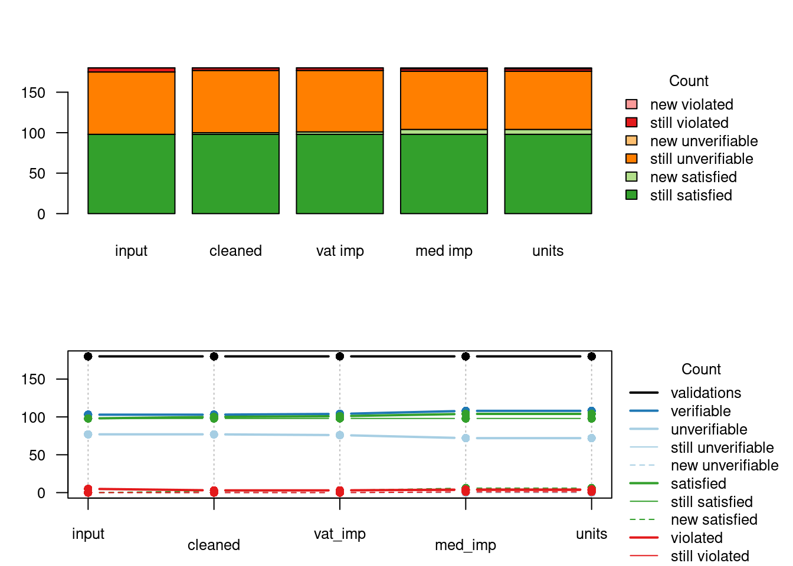

Chapter 9 Comparing data sets
When processing data step by step, it is useful to gather information on the contribution of each step to the final result. This way the whole process can be monitored and the contribution of each step can be evaluated. Schematically, a data processing step can be visualised as follows.

Data, process, changed data
Here, some input data is processed by some procedure that is parameterized, usually by domain experts. The output data is again input for a next step.
In the following two sections we discuss two methods to compare two or more
versions of a data set. In the last section we demonstrate how validate can
be combined with the
lumberjack package to automate
monitoring in an R script.
9.1 Cell counts
One of the simplest ways to compare different versions of a data set is to count how many cells have changed. In this setting it can be useful to distinguish between changes from available to missing data (and vice versa) and changes between data where the values change. When comparing two data sets, say the input and the output data, the total number of cells can be decomposed according to the following schema.

decomposition of output fields
The total number of cells (fields) in the output data can be decomposed into those cells that are filled (available) and those that are empty (missing). The missing ones are decomposed into those that were already missing in the input data and those that are still missing. Similarly, the available values can be decomposed into those that were missing before and have been imputed. And those that already were available can be decomposed in those that are the same as before (unadapted) and those that ave been changed (adapted).
With the validate package, these numbers can be computed for two or more
datasets using cells(). As an example, we first create three versions of the
SBS2000 dataset. The first version is just the unaltered data. In the
second version we replace a revenue column with it’s absolute value to ‘repair’
cases with negative revenues. In the third version, we impute cases where
turnover is missing with the vat (value added tax) value, when available.
library(validate)
data(SBS2000)
original <- SBS2000
version2 <- original
version2$other.rev <- abs(version2$other.rev)
version3 <- version2
version3$turnover[is.na(version3$turnover)] <- version3$vat[is.na(version3$turnover)]We can now compare version2 and version3 to the original data set as follows.
## Object of class cellComparison:
##
## cells(input = original, cleaned = version2, imputed = version3)
##
## input cleaned imputed
## cells 660 660 660
## available 580 580 581
## still_available 580 580 580
## unadapted 580 579 579
## adapted 0 1 1
## imputed 0 0 1
## missing 80 80 79
## still_missing 80 80 79
## removed 0 0 0The cells function accepts an arbitrary number of name=data frame arguments. The
names provided by the user are used as column names in the output. From the output we see
that the cleaned data set (version2) and in the imputed data set (version3) have
one adapted value compared to the original data. Similarly, no imputations took place in
preparing the cleaned data set, but a single value was imputed in the imputed dataset.
Since each data frame is compared to the first data frame, the last column can be considered a ‘cumulative’ record of all changes that took place from beginning to end. It is also possible to print differential changes, where each data set is compared with the previous one.
## Object of class cellComparison:
##
## cells(input = original, cleaned = version2, imputed = version3, compare = "sequential")
##
## input cleaned imputed
## cells 660 660 660
## available 580 580 581
## still_available 580 580 580
## unadapted 580 579 580
## adapted 0 1 0
## imputed 0 0 1
## missing 80 80 79
## still_missing 80 80 79
## removed 0 0 0The output of cells() is an array of class cellComparison. The most
interesting about this is that validate comes with two plot methods for such
objects. To demonstrate this, we will create two more versions of the
SBS2000 dataset.
version4 <- version3
version4$turnover[is.na(version4$turnover)] <- median(version4$turnover, na.rm=TRUE)
# from kEUR to EUR
version5 <- version4
version5$staff.costs <- version5$staff.costs * 1000out <- cells(input = original
, cleaned = version2
, vat_imp = version3
, med_imp = version4
, units = version5)
par(mfrow=c(2,1))
barplot(out)
plot(out)
The bar plot and line plot convey the same information. The line plot is better when the data sets are instances resulting from a sequential process. The bar plot can be used more generally since it does not suggest a particular order.
9.2 Comparing rule violations
When processing data it is interesting to compare how many data validations are violated before and after a processing step. Comparing output data with input data, we can decompose the total number of validation results of the output data as follows.

decomposition of validation output
The total number of validation results in the output data van be split into
those that are verifiable (TRUE or FALSE) and those that are unverifiable
(NA). The unverifiable cases can be split into those that were also
unverifiable in the input data (still) and those that were verifiable in the
input data but can now not be verified, because certain fields have been
emptied. The verifiable cases can be split into those that yielded FALSE
(violated) and those that yielded TRUE (satisfied). Each can be split into
cases that stayed the same or changed with respect to the input data.
With validate the complete decomposition can be computed with compare().
It takes as first argument a validator object and two or more data sets
to compare. We will use the data sets developed in the previous paragraph.
rules <- validator(other.rev >= 0
, turnover >= 0
, turnover + other.rev == total.rev
)
comparison <- compare(rules
, input = original
, cleaned = version2
, vat_imp = version3
, med_imp = version4
, units = version5)
comparison## Object of class validatorComparison:
##
## compare(x = rules, input = original, cleaned = version2, vat_imp = version3, med_imp = version4, units = version5)
##
## Version
## Status input cleaned vat_imp med_imp units
## validations 180 180 180 180 180
## verifiable 103 103 104 108 108
## unverifiable 77 77 76 72 72
## still_unverifiable 77 77 76 72 72
## new_unverifiable 0 0 0 0 0
## satisfied 98 100 101 104 104
## still_satisfied 98 98 98 98 98
## new_satisfied 0 2 3 6 6
## violated 5 3 3 4 4
## still_violated 5 3 3 3 3
## new_violated 0 0 0 1 1By default each data set is compared to the first dataset (input=original).
Hence the last column represents the cumulative change of all processing steps
since the first data set. It is possible to investigate local differences by
setting how='sequential'.
It is possible to plot the output for a graphical overview in two different ways: a bar plot and a line plot.

9.3 validate and lumberjack
The lumberjack package makes it easy to track changes in data in a user-defined way. The following example is slightly adapted from the JSS paper.
We create a script that reads data, performs a few data cleaning steps
and then writes the output. The script is stored in clean_supermarkets.R and
has the following code.
## Contents of clean_supermarkets.R
library(validate)
# 1. simulate reading data
data(SBS2000)
spm <- SBS2000[c("id","staff","turnover","other.rev","total.rev")]
# 2. add a logger from 'validate'
start_log(spm, logger=lbj_cells())
# 3. assume empty values should be filled with 0
spm <- transform(spm, other.rev = ifelse(is.na(other.rev),0,other.rev))
# 4. assume that negative amounts have only a sign error
spm <- transform(spm, other.rev = abs(other.rev))
# 5a. ratio estimator for staff conditional on turnover
Rhat <- with(spm, mean(staff,na.rm=TRUE)/mean(turnover,na.rm=TRUE))
# 5b. impute 'staff' variable where possible using ratio estimator
spm <- transform(spm, staff = ifelse(is.na(staff), Rhat * turnover, staff))
# 6. write output
write.csv(spm, "supermarkets_treated.csv", row.names = FALSE)In the first section we do not actually read data from a data source but take a
few columns from the SBS2000 data set that comes with the validate package.
The data to be processed is stored in a variable called spm. Next, in
section two, we use the lumberjack function start_log() to attach a logging
object of type lbj_cells() to the data under scrutiny. Two things are of
note here:
- The call to
library(validate)is necessary to be able to uselbj_cells(). Alternatively you can usevalidate::lbj_cells(). - It is not necessary to load the
lumberjackpackage in this script (although it is no problem if you do).
In sections three and four, values for other revenue are imputed and then forced to be nonnegative. In section 5 a ratio model is used to impute missing staff numbers. In section 7 the output is written.
The purpose of the lbh_cells() logger is to record the output of cells()
after each step. To make sure this happens, run this file using run_file()
from the lumberjack package.
## Dumped a log at /home/mark/projects/validate/cookbook/spm_lbj_cells.csvThis command executed all code in clean_supermarkets.R, but run_file() also ensured
that all changes in the spm variable were recorded and logged using lbj_cells().
The output is written to a csv file which we can read.
The logfile variable has quite a lot of columns, so here show just two rows.
## step time
## 3 2 2020-12-07 21:21:33
## 4 3 2020-12-07 21:21:33
## expression cells
## 3 spm <- transform(spm, other.rev = ifelse(is.na(other.rev),0,other.rev)) 300
## 4 spm <- transform(spm, other.rev = abs(other.rev)) 300
## available still_available unadapted adapted imputed missing still_missing
## 3 288 252 252 0 36 12 12
## 4 288 288 287 1 0 12 12
## removed
## 3 0
## 4 0Each row in the output lists the step number, a time stamp, the expression used
to alter the contents of the variable under scrutiny, and all columns computed
by cells(). Since the logger always compares two consecutive steps, these
numbers are comparable to using cells(comapare='sequential'). For example, we
see that after step four, one value was adapted compared to the state after
step three. And in step three, 36 values were imputed compared to the state
created by step 2. In step four, no values were imputed.
It is also interesting to follow the progression of rule violations as the
spm dataset gets processed. This can be done with the lbj_rules() logger
that is exported by validate. Since lumberjack allows for multiple loggers
to be attached to an R object, we alter the first part of the above script as
follows, and store it in clean_supermarkets2.R
## Contents of clean_supermarkets2.R
library(validate)
#1.a simulate reading data
data(SBS2000, package="validate")
spm <- SBS2000[c("id","staff","other.rev","turnover","total.rev")]
# 1.b Create rule set
rules <- validator(staff >= 0, other.rev>=0, turnover>=0
, other.rev + turnover == total.rev)
# 2. add two loggers
start_log(spm, logger=lbj_cells())
start_log(spm, logger=lbj_rules(rules))
## The rest is the same as above ...Running the file again using lumberjack, we now get two log files.
## Dumped a log at /home/mark/projects/validate/cookbook/spm_lbj_cells.csv## Dumped a log at /home/mark/projects/validate/cookbook/spm_lbj_rules.csvLet’s read the log file from spm_lbj_rules.csv and print row three and four.
## step time
## 3 2 2020-12-07 21:21:33
## 4 3 2020-12-07 21:21:33
## expression
## 3 spm <- transform(spm, other.rev = ifelse(is.na(other.rev),0,other.rev))
## 4 spm <- transform(spm, other.rev = abs(other.rev))
## validations verifiable unverifiable still_unverifiable new_unverifiable
## 3 240 225 15 15 0
## 4 240 225 15 15 0
## satisfied still_satisfied new_satisfied violated still_violated new_violated
## 3 218 152 66 7 5 2
## 4 220 218 2 5 5 0We get the full output created by validate::compare(). For example we
see that after step three, 66 new cases satisfy one of the checks while two new
violations were introduced. The fourth step adds two new satisfied cases and no
new violations. The total number of violations after four steps equals five.
Until now the logging data was written to files that were determined automatically
by lumberjack. This is because lumberjack automatically dumps logging data
after processing executing the file when the user has not done so explicitly.
You can determine where to write the logging data by adding a stop_log()
statement anywhere in your code (but at the end would usually make most sense).
For example, add the following line of code at the end of
clean_supermarkets2.R to write the output of the lbj_rules logger to
my_output.csv.
The format and way in which logging data is exported is fixed by the logger. So
lbj_rules() and lbj_cells() can only export to csv, and only the data we’ve
seen so far. The good news is that the lumberjack package itself contains
other loggers that may be of interest, and it is also possible to develop your
own logger. So it is possible to develop loggers that export data to a
database. See the lumberjack paper for a
short tutorial on how to write your own logger.